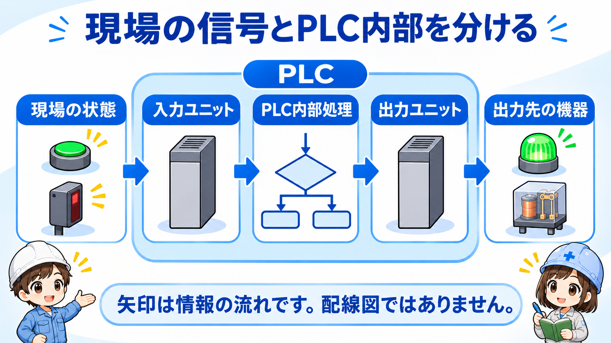
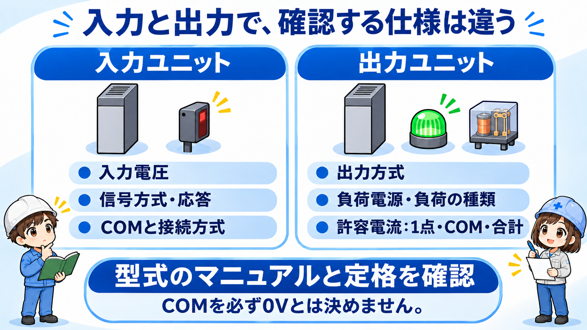
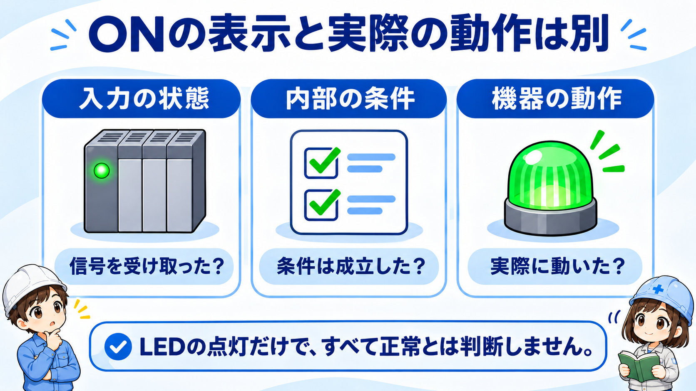
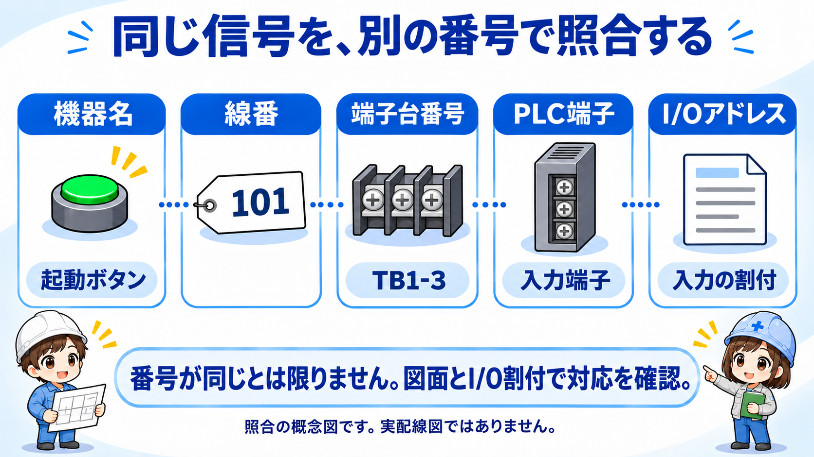
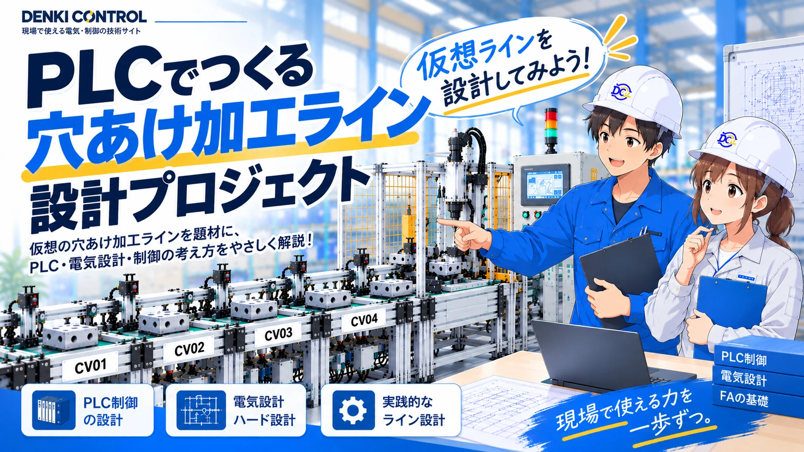

PLC入力ユニット・出力ユニットとは
入力ユニットは、押しボタンやセンサーの状態をPLCへ伝える入口です。出力ユニットは、PLCの処理結果に応じて外部回路を切り替える出口です。入力と出力をまとめてI/O（Input / Output）と呼びます。
「入力・出力」はPLCを基準にした呼び方です。たとえばセンサーが出す信号は、PLC側から見ると入力になります。同じ信号でも、どの機器から見ているかで呼び方が変わります。
PLCにはI/Oを本体に内蔵するものと、別のユニットを組み合わせるものがあります。ここではON・OFFを扱うデジタルI/Oを中心に説明します。温度や圧力などの量を扱うアナログI/Oは別の種類です。
まずは信号の向きを分ける
入力は「現場 → PLC」、出力は「PLC → 現場」です。入力がONになれば必ず出力もONになるわけではなく、その間にはプログラムの判断があります。

先輩センサーの「出力」がPLCの「入力」になることもあるよ。PLCから見て、入ってくる情報か、外へ伝える指令かを分けよう。

後輩機器の名前だけではなく、どちら向きの信号かを見るんですね。
基本構成は「入口・判断・出口」

入力ユニットは外部の電気信号を、PLCが扱える状態情報として受け取ります。CPUは取り込んだ情報とプログラム内の条件をもとに判断し、出力ユニットがその結果に応じて外部回路を切り替えます。
PLC内部の状態と端子の実信号は、更新処理を通して関係します。すべてが同じ瞬間に切り替わるとは限りません。時間の関係を詳しく知りたい場合は、PLCのスキャンへ進んでください。
入力と出力で確認するもの

入力：何の状態を受け取るか
押しボタン、リミットスイッチ、近接センサーなどが代表例です。入力電圧、信号方式、COMの構成と、つなぐ機器の仕様が合っている必要があります。PLC入力がすべてDC24Vとは限らず、AC入力などの種類もあります。
出力：どの回路を切り替えるか
表示灯、リレーコイル、電磁弁コイルなどへの制御に使います。ただし、機器名だけで接続できるかは決まりません。出力の方式、電圧・電流の定格と、負荷の特性を照合します。
出力方式にはリレー、トランジスタ、トライアックなどがあります。対応するAC/DCや切替速度などが異なるため、同じ「出力ユニット」でも同一条件で使えるとは限りません。
出力端子は万能の電源ではない
負荷用の電源が別に必要な構成もあります。モータの主回路や、出力の許容範囲を超える負荷をPLC出力へ直接つなぐものではありません。適切な接触器やドライブ機器などを介する設計が必要です。その制御側のコイルや入力も、PLC出力との適合確認が必要です。
定格は電圧だけでなく、1点当たりの電流、COMグループやユニット合計の電流、突入電流、負荷の種類まで確認対象です。数値は機種ごとに違うため、この記事では共通の上限値を示しません。
入力ユニットと出力ユニットの違い
| 観点 | 入力ユニット | 出力ユニット |
|---|---|---|
| 情報の向き | 現場の状態 → PLC | PLCの判断 → 外部回路 |
| 代表的な接続先 | 押しボタン・センサー | 表示灯・リレーなどの適合する負荷 |
| 役割 | 状態を受け取る | 外部回路を切り替える |
| 仕様書で見る項目 | 入力電圧・応答・接続方式・COM | 出力方式・電圧・許容電流・負荷電源・COM |
| プログラムとの対応 | 入力アドレスや変数 | 出力アドレスや変数 |
三菱電機のPLCでは入力X、出力Yというデバイス表記が使われますが、全メーカー共通ではありません。また、端子番号・線番・プログラムのアドレスはそれぞれ別の役割です。実際の対応はI/O割付表と図面で追います。
入力ONと機器の動作は別の確認
押しボタンを受けて表示灯を点灯させる例では、「入力を取り込む → プログラムで条件を判断する → 出力回路を切り替える → 表示灯が動作する」という流れになります。

入力がONでも、ほかの許可条件が成立しなければ出力はONになりません。また、プログラム上の出力指令がONでも、負荷電源や配線などの条件が整わなければ、実際の機器が動くとは限りません。
ここでは「入力が来た」「条件が成立した」「出力を指令した」「機器が動いた」を分けて考えられれば十分です。詳しい整理はPLC入出力トラブルシューティングの基本で扱います。
先輩出力の表示がONでも、それだけで接続先が正常に動いたとは言えないんだ。PLCの指令と、機器の実動作は分けて考えよう。
後輩入力、内部の条件、出力指令、実際の動作をひとまとめにしないことが大事なんですね。
現場では「番号・COM・表示」を分けて読む

番号は同じと決めず、対応づける
図面上の機器名と線番、端子台番号、PLCの物理端子、I/Oアドレスを対応づけます。数字が似ているから同じ、と決めず、実機の型式とI/O割付を確認します。改造履歴がある設備では図面の版も確認対象です。
COMは必ず0Vとは限らない
COMは複数の回路に共通する端子です。どの信号と同じグループか、どのように接続するかはユニットの仕様で決まります。「COMだから全部つなぐ」「必ず0V」とは考えず、メーカーの結線図で確認します。関連する考え方はDC24Vのプラスコモン・マイナスコモンで整理しています。
LEDは手がかりであり、負荷動作の証明ではない
入力LED・出力LEDは状態を知る手がかりですが、示す内容は機種で確認します。LEDの点灯だけで、配線・負荷電源・接続先まで正常と決めないことが大切です。
実設備の安全を優先する
この記事は制御の読み方であり、通電部の測定や配線変更の作業手順ではありません。実設備の作業は担当者と現場の手順に従い、必要な停止・エネルギー遮断などの安全措置を優先してください。確認のために無理に機器を動かしたり、安全機能を解除したりしないでください。
メーカー資料で確認すること
基本の考え方と仕様の違いは、次の一次資料で確認しています。実際の設計・配線では、使用する型式の最新マニュアルと定格を優先してください。
- オムロン：PLC用語解説：I/Oメモリ、I/Oリフレッシュ、I/O割付の考え方。
- オムロン：CJシリーズ入力ユニットの定格・性能：入力電圧、応答、COMと結線の例。個別製品の数値は全PLC共通ではありません。
- オムロン：CJシリーズ出力ユニットの定格・性能：出力方式、許容電流、負荷電源などの違い。
- 三菱電機：入出力信号（I/O信号）：三菱電機での入力X・出力Yの表記。
公式資料確認日：2026年11月13日。
まとめ：入力・判断・出力を区別する
入力ユニットは状態を受け取り、CPUが条件を判断し、出力ユニットは外部回路を切り替えます。最初はこの3つを分けて読むことが基本です。
この記事の結論
入力は「現場 → PLC」、出力は「PLC → 現場」。実機では型式、I/O割付、COM、出力定格を確認し、LEDの点灯と機器の動作を同じ意味にしないようにしましょう。

I/Oの基礎を、実際の設備設計につなげる
入力・出力の役割が分かったら、穴あけ加工ラインを題材に「設備仕様 → I/O → 搬送 → 加工」の順で設計する実践シリーズへ進めます。
第1回から設計を始める
既設設備のラダー変更・動作変更は、プロジェクトデータを確認してオンラインで対応します。
会員登録不要｜データ確認後にお見積り